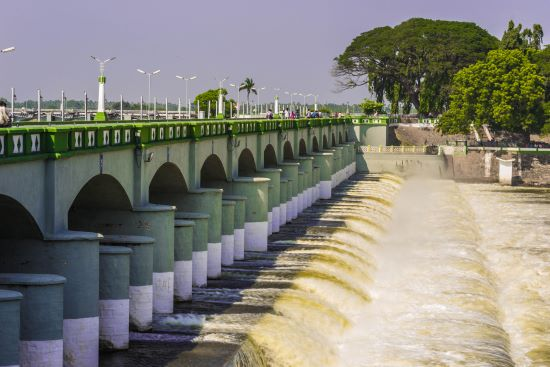

VELLORE
ANAICUT

An anaicut is a traditional water management structure, typically a dam or weir, built across rivers or streams to regulate the flow of water for irrigation and flood control. It helps store excess water during the rainy season and releases it gradually to ensure a consistent water supply for agricultural fields, especially in regions with erratic rainfall. Anaicuts are often constructed from stone, masonry, or concrete and can include spillways or sluice gates to manage water flow. Historically, they have played a crucial role in sustaining agriculture and supporting rural economies, especially in countries like India.
One of the most notable examples is the Kallanai (Grand Anicut) in Tamil Nadu, built over 2,000 years ago, which is still in use today. These structures not only promote irrigation but also help in flood prevention, making them essential for both water conservation and sustainable agricultural practices.
While anaicuts offer significant benefits, their maintenance is crucial to prevent issues such as siltation, erosion, or structural damage, which can obstruct the flow of water and reduce their efficiency. Over time, sediment can accumulate at the base of the structure, diminishing the storage capacity. In many parts of the world, the maintenance and operation of anaicuts involve local communities and water management authorities, ensuring that these structures continue to support agricultural livelihoods. Their enduring legacy as a symbol of sustainable water management highlights the importance of traditional engineering methods in addressing modern challenges related to water scarcity and climate change.